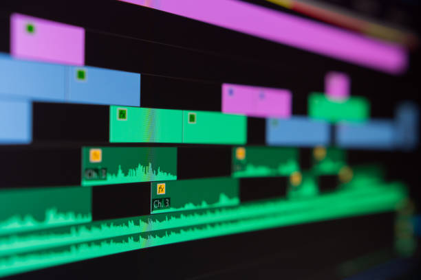

En hjemmeside om film produktion
Denne hjemmeside er produceret som en del af et kommunikation IT projekt
for at fremvise film produktion og alle de forskellige trin i den.
Denne hjemmeside inderholder i alt 5 undersider, ekslusivt den nuværende side
er der "Storyboard Film", hvilket indeholder vores film om storyboard,
"Post Produktion Film", der indeholder vores film of post produktion,
en "Om Os" Side der indeholder information beskrivende af os og denne produktion
og til sidst en side der fremviser relevante film diagrammer samt beskrivelser.
